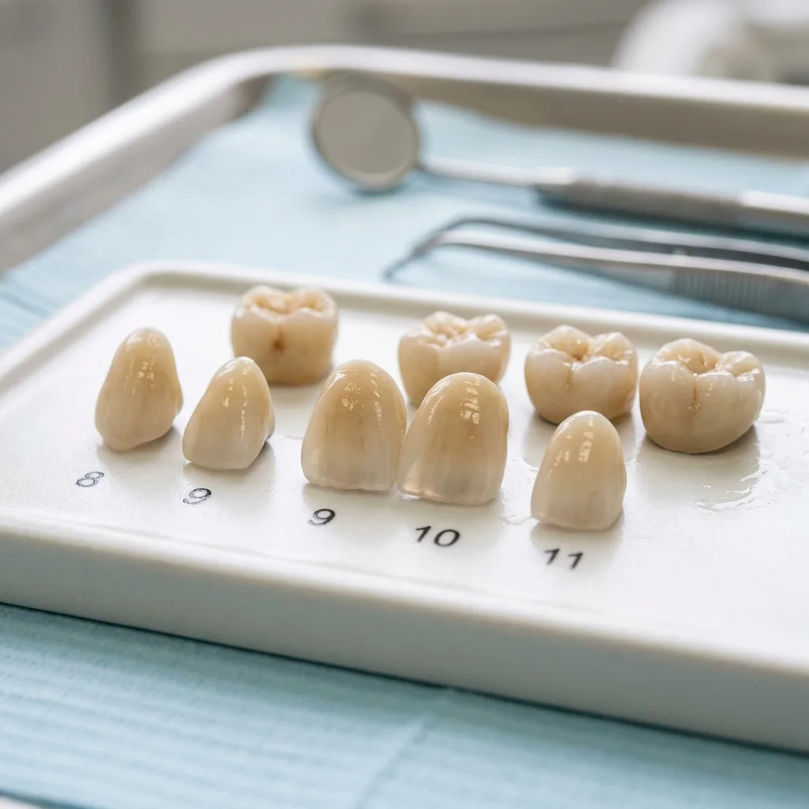

Root Canal Treatment in Ahmedabad: Save Your Natural Tooth with Painless RCT

Root Canal Treatment (RCT) is a safe, effective, and tooth-saving procedure that can relieve pain and preserve your natural tooth. If you are looking for painless root canal treatment in Ahmedabad, our experienced dental team provides advanced endodontic care using modern techniques and technology.
Contrary to popular belief, modern root canal treatment is designed to eliminate pain—not cause it.
What Is Root Canal Treatment?
Root Canal Treatment (RCT) is a dental procedure used to treat infection or damage within the pulp (nerve) of a tooth. During the procedure, the infected pulp is carefully removed, the root canals are cleaned and disinfected, and the tooth is sealed to prevent future infection.
A dental crown is often recommended after treatment to restore the tooth's strength, function, and appearance.
Signs You May Need a Root Canal Treatment
- Persistent toothache
- Severe sensitivity to hot or cold foods and drinks
- Pain while chewing or biting
- Swelling around the affected tooth
- Gum tenderness or abscess formation
- Tooth discoloration
- Deep dental decay reaching the tooth nerve
Early diagnosis can help save the tooth and prevent the infection from spreading.
Is Root Canal Treatment Painful?
Modern root canal treatment is typically no more uncomfortable than getting a dental filling. With advanced anesthesia techniques and rotary endodontic technology, most patients experience minimal discomfort during the procedure.
At our clinic, we prioritize gentle and painless dental care to ensure a comfortable treatment experience.
Why Save Your Natural Tooth?
Whenever possible, preserving a natural tooth is the best option. Saving your tooth through root canal treatment helps:
- Maintain natural chewing efficiency
- Prevent neighboring teeth from shifting
- Preserve jawbone health
- Avoid the need for tooth replacement options such as bridges, dentures, or implants
Why Choose Our Clinic for Root Canal Treatment in Ahmedabad?
Our team utilizes advanced diagnostic imaging, digital radiography, and modern root canal techniques to provide precise and effective treatment. We focus on delivering painless root canal treatment in Ahmedabad with a strong emphasis on patient comfort and long-term success.
Following treatment, we offer high-quality crowns and restorative solutions to protect and strengthen the treated tooth.
Book Your Root Canal Consultation Today
If you are experiencing tooth pain or suspect a dental infection, do not delay treatment. Early intervention can save your natural tooth and prevent more complex dental problems.
Schedule your consultation today for expert root canal treatment in Ahmedabad and restore your oral health with confidence.
Single-Sitting or Multiple Visits?
Most straightforward cases are completed in one appointment of roughly 45 to 90 minutes. Single-sitting treatment removes the risk of a temporary dressing leaking between visits. Multiple visits remain appropriate where there is an active abscess needing drainage, severe infection where a medicated dressing helps, or unusually complex canal anatomy. Neither approach is universally better — we will explain which applies to your tooth.

A root-treated back tooth almost always needs a crown to prevent fracture.
Why the Crown Afterwards Is Not Optional
This is where root canal treatment most often fails, and it is usually a decision the patient makes rather than a clinical failure. A root-treated back tooth has lost internal structure and becomes more brittle, while molars absorb heavy chewing forces.
Without a crown, the tooth can fracture — sometimes below the gumline, at which point it cannot be saved and the root canal was wasted. Skipping the crown to save money is the most common route from a successful root canal to an extraction two years later.
Root Canal or Extraction?
Saving the natural tooth is almost always preferable. No replacement performs as well as a natural root: keeping it preserves bone, maintains the bite and stops neighbouring teeth drifting. Compared with extraction followed by an implant or bridge, root canal treatment is usually faster, less invasive and less expensive.
Extraction becomes the better option when the tooth is fractured vertically, when too little structure remains to hold a restoration, or when bone support is already severely compromised.
Aftercare
- Mild tenderness to biting for a few days is normal — the ligament around the root is bruised
- Take pain relief as advised for the first day or two rather than waiting for discomfort
- Avoid chewing on that side until the permanent crown is fitted
- Severe pain, swelling, or a temporary filling coming out warrants a call, not a wait
What Affects the Cost
Cost depends on which tooth is involved — a front tooth has one canal, a molar often has three or four — the complexity of the anatomy, whether retreatment of previous work is needed, and the crown that follows. You will receive a written plan before treatment begins.
Your Clinician
Root canal treatment here is carried out by Dr Gursimran Singh Batra, BDS, MDS, who holds a Fellowship in Endodontics alongside his MDS in Prosthodontics & Implantology, and is a Senior Lecturer and Examiner under Gujarat University. Treatment uses rotary instrumentation, electronic apex locators and digital radiography, under our Class B sterilisation protocol.

Root Canal Treatment in South Bopal & Ahmedabad
We are on the ground floor at B-17/C, Sun South Street, behind Safal Parisar-1, South Bopal — easily reached from Bopal, Shela, Ghuma, Shilaj and Ambli, and from across Ahmedabad via the SP Ring Road. Open Monday to Saturday 10:30 AM–8:00 PM and Sunday 10:00 AM–12:00 PM.
If a tooth is painful now, contact us and we will tell you honestly whether it needs same-day attention. For a fuller explanation, read what to expect from modern root canal treatment.